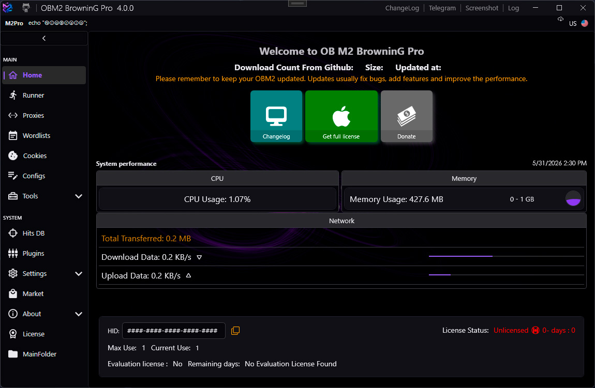
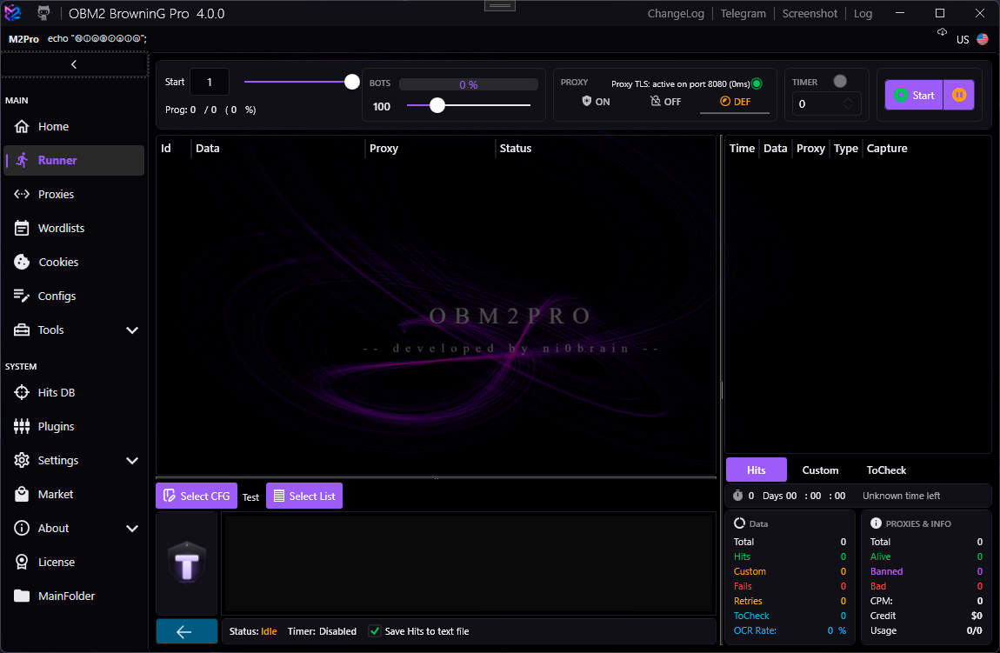
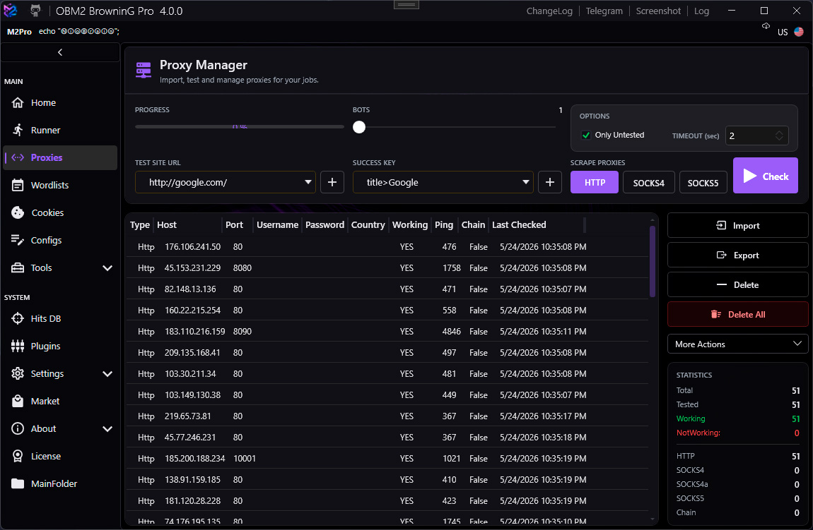
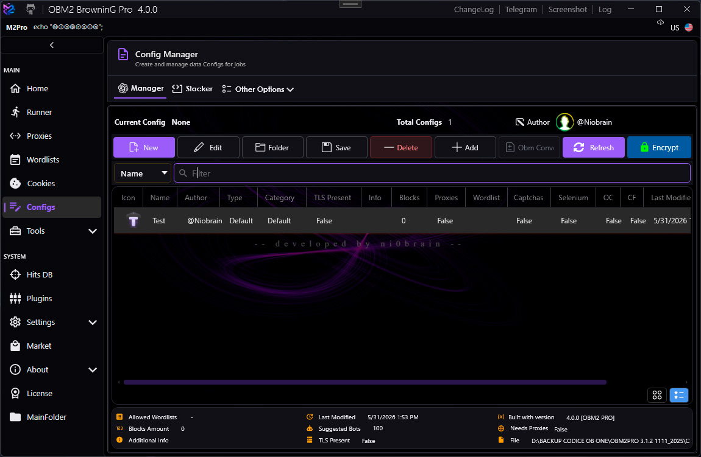

OBM2 Pro
OBM2 Pro
Usage Guide
Everything you need to know about running OBM2 Pro, managing proxies, configs, and wordlists.
Before You Start
OBM2 Pro is a web-testing suite intended for authorized security testing, scraping, and automation. Use it only against systems you own or have explicit written permission to test.
By using this software you agree that you are solely responsible for any actions performed with it. The authors assume no liability for misuse.
Getting Started
Requirements
OBM2 Pro is a portable .NET 8 application: unzip the release folder anywhere and run it — there is no installer. Before the first launch, make sure these runtime components are installed:
| Component | Notes |
|---|---|
| Windows 10 / 11 (64-bit) | Required. |
| .NET 8 Desktop Runtime (x64) | Mandatory — the app will not start without it. Pick the Desktop Runtime, not the SDK or the console runtime. |
| Visual C++ Redistributable 2015–2022 — x64 + x86 | Needed by native dependencies (OCR/Tesseract, image processing). The app checks for it on startup and warns if missing. |
Automatic updates
From version 4.0.0 onward, OBM2 Pro updates itself. When a newer release is published, the built-in Updater downloads the new package, verifies its integrity (SHA-256), replaces the program files and restarts the app automatically. Your data — configs, wordlists, proxies, settings and hits — is preserved across updates. Releases 3.1.x do not include the updater and must be upgraded to 4.0.0 manually once.
Main Menu
Launch OB M2 BrowninG.exe. The main menu appears with the following sections accessible from the left navigation rail:
| Section | Description |
|---|---|
| Runner | Execute configs against wordlists with multiple bots |
| Proxy Manager | Import, test, and manage proxy lists |
| Wordlist Manager | Register wordlist files for use in runners |
| Config Manager | Create, edit, and organize LoliScript configs |
| Hits DB | Browse and export captured hits |
| Tools | Hash, regex, wordlist, domain scanner, and more |
| Settings | Global application settings |

Runner Manager
The Runner executes a selected config against a wordlist using a configurable number of bots (threads).
| Setting | Description |
|---|---|
| Config | The LoliScript config to run |
| Wordlist | Input data file (one entry per line) |
| Bots | Number of concurrent threads |
| Proxy Pool | Proxy list to rotate through |
| Skip | Number of entries to skip from the start |
| Start / Stop / Pause | Execution controls |
Bot Statuses
| Status | Color | Meaning |
|---|---|---|
| SUCCESS | Green | All success keychains matched |
| FAILURE | Red | A failure keychain matched |
| BAN | Amber | A ban keychain matched (proxy rotated) |
| RETRY | Cyan | A retry keychain matched (re-queued) |
| ERROR | Gray | Unhandled exception during execution |
| CUSTOM | Violet | Custom keychain defined in config |

Proxy Manager
Import and manage proxies from files, paste, or an API endpoint. OBM2 Pro supports multiple proxy types:
| Type | Format |
|---|---|
| HTTP / HTTPS | host:port or host:port:user:pass |
| Socks4 | host:port |
| Socks4a | host:port |
| Socks5 | host:port or host:port:user:pass |
| Proxy Chains | Multiple proxies chained for anonymity |
Use the Check button to test proxy connectivity. Dead proxies are highlighted in red and can be removed in bulk.

Wordlist Manager
Register wordlist files so they appear in the Runner's wordlist picker. Each wordlist has a type that configs can check against.
| Field | Description |
|---|---|
| Name | Display name shown in the Runner |
| Path | Absolute path to the text file |
| Type | e.g. Default, Credentials, Email:Password |
| Purpose | Free-text description |
Config Manager
Browse, create, duplicate, and delete LoliScript configs. Configs are stored as .loli or .anom files in the configured configs folder.
Open a config in the Stacker (visual block editor) or the LoliScript editor (text mode). Both views stay in sync.
Use the search bar in Config Manager to filter configs by name. Results update live as you type.

Hits DB
All captured hits (bot status = SUCCESS or CUSTOM with isCapture=true variables) are stored in the built-in LiteDB database.
From Hits DB you can:
- Filter hits by config name, date range, or custom data
- Export hits to CSV or plain text
- Delete individual hits or purge all hits for a config
- View captured variables per hit
Tools
Built-in utilities accessible from the Tools section:
| Tool | Description |
|---|---|
| Hash | Compute MD5, SHA1, SHA256, SHA512 hashes |
| Regex | Test regular expressions against sample text |
| List Generator | Generate wordlists from patterns or rules |
| Wordlist Tools | Merge, deduplicate, split, and convert wordlists |
| Domain Scanner | Enumerate subdomains and DNS records |
| Convert Tools | Base64, URL encoding, hex conversion |
| Cookie Converter | Convert browser cookie exports to usable formats |
| Database | Raw LiteDB browser for hits and config data |
| Selenium Tools | WebDriver management and browser testing |
| Tesseract Downloads | Download OCR language data for image captcha solving |
Settings
Global application settings are split into tabs:
| Tab | Key Options |
|---|---|
| General | Configs folder, hits folder, DB path, theme |
| Runner | Default bots count, ban keys, retry on ban, proxy rotation |
| Proxy | TLS Proxy port, timeout, connect timeout |
| Captcha | API keys for captcha solving services |
| Selenium | WebDriver path, default browser, headless mode |
| Remote | Remote API port and secret key |
TLS Proxy port must match the port configured in the TLS Request block.
Default is 8080. The proxy process (tls-proxy.exe) starts automatically with OBM2 Pro.
Environment Variables
These special variables can be referenced inside configs and affect runner behavior:
| Variable | Description |
|---|---|
WLTYPE | Type of the current wordlist (e.g. Credentials). Configs can check this to validate input format. |
CUSTOMKC | Name of a custom keychain to use for this run. Allows dynamic keychain selection. |
EXPFORMAT | Export format for hits. Overrides the default hit format string. |